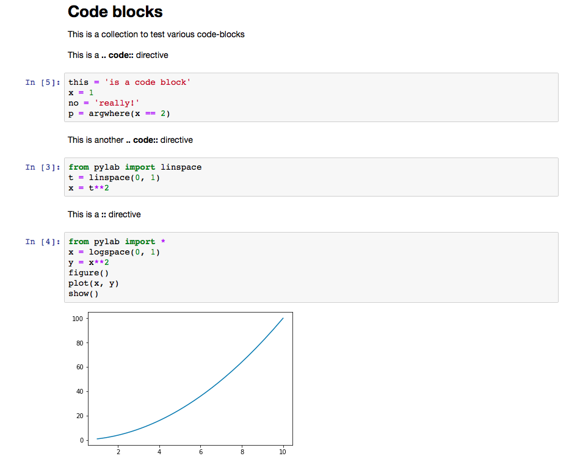
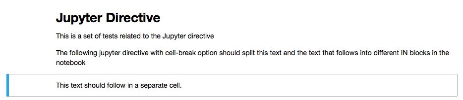
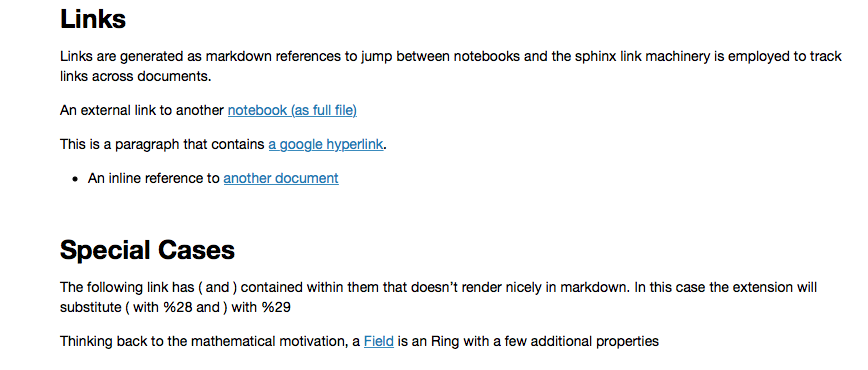
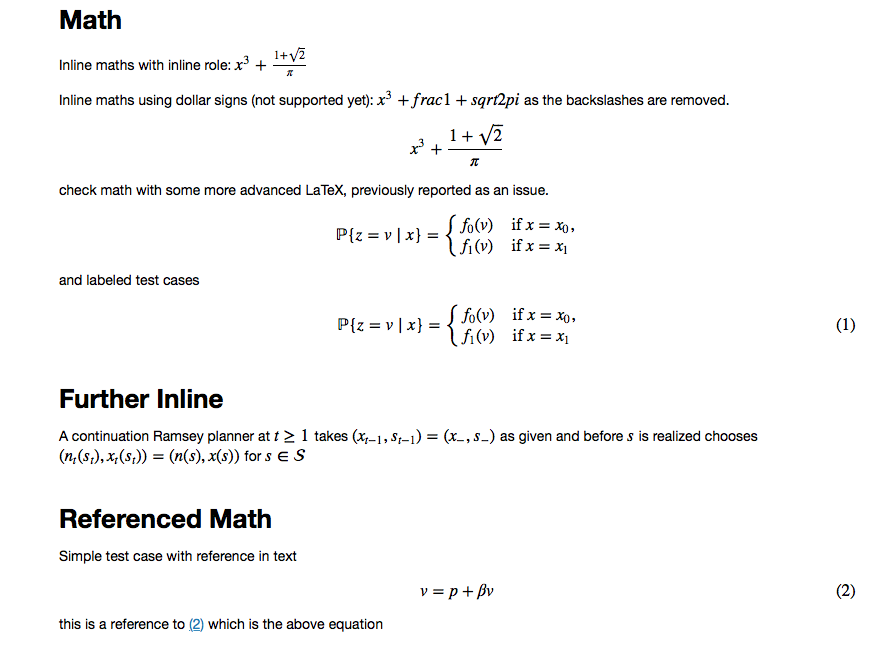
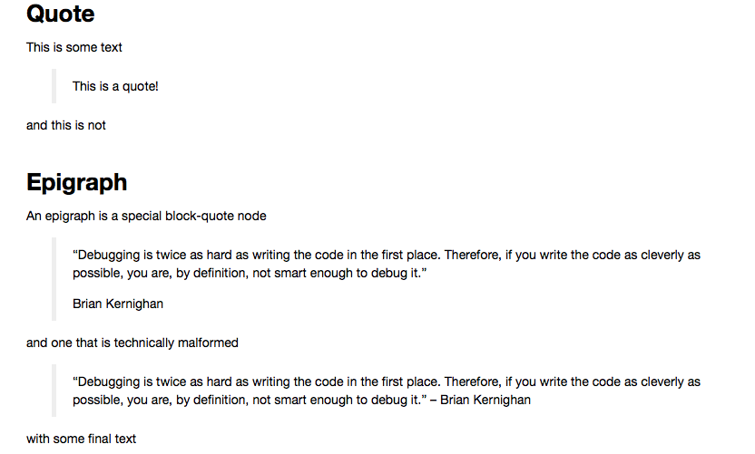
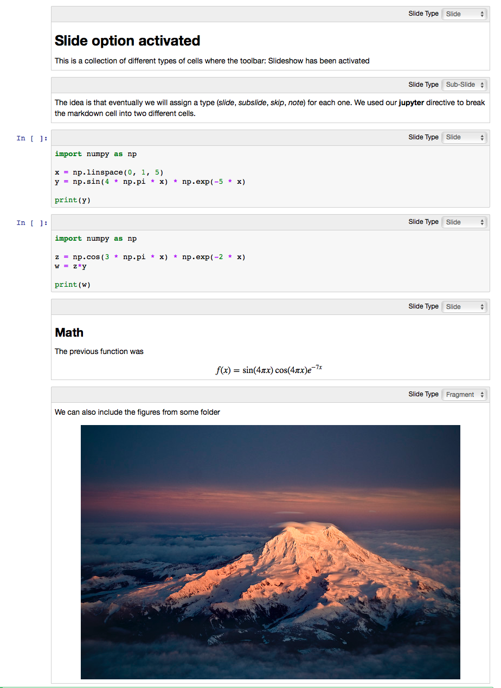
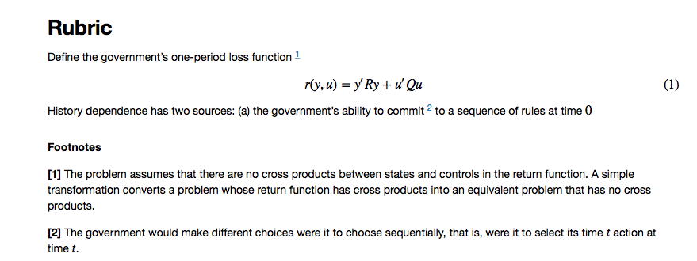
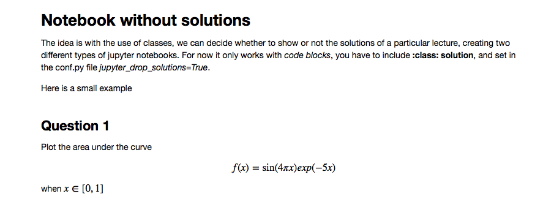
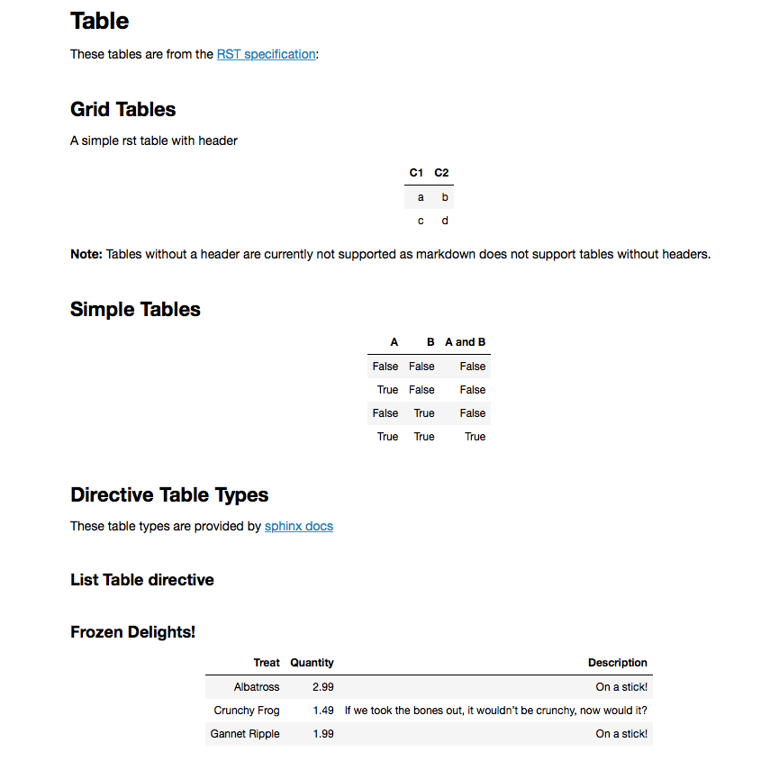
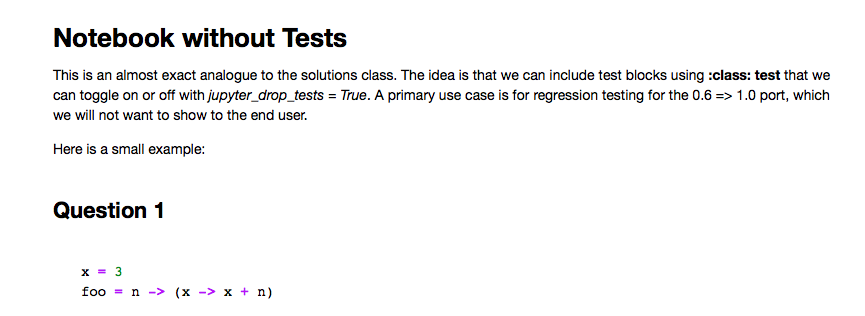

RST Conversion Gallery¶
Note
A minimum configured sphinx repo is available here which generates a sample notebook
Examples
The test suite, located here provides examples of conversions between RST and the Jupyter notebook which form the test cases for this extension. It can be a useful resource to check how elements are converted if they are not contained in this gallery.
code-blocks¶
The following code in the .rst file
Code blocks
-----------
This is a collection to test various code-blocks
This is a **.. code::** directive
.. code:: python
this = 'is a code block'
x = 1
no = 'really!'
p = argwhere(x == 2)
This is another **.. code::** directive
.. code:: python
from pylab import linspace
t = linspace(0, 1)
x = t**2
This is a **::** directive
::
from pylab import *
x = logspace(0, 1)
y = x**2
figure()
plot(x, y)
show()
will look as follows in the jupyter notebook
images and figures¶
The following code in the .rst file
Images
======
Collection of tests for **.. image::** and **.. figure::** directives
Image
-----
`Docutils Reference <http://docutils.sourceforge.net/docs/ref/rst/directives.html#images>`__
Most basic image directive
.. image:: _static/hood.jpg
A scaled down version with 25 % width
.. image:: _static/hood.jpg
:width: 25 %
A height of 50px
.. image:: _static/hood.jpg
:height: 50px
Figure
------
`Docutils Reference <http://docutils.sourceforge.net/docs/ref/rst/directives.html#figure>`__
Testing the **.. figure::** directive
.. figure:: _static/hood.jpg
:scale: 50 %
will look as follows in the jupyter notebook
Warning
if jupyter_images_markdown = True then the :scale:, :height:
and :width: attributes will be ignored.
jupyter-directive¶
The following code in the .rst file
Jupyter Directive
=================
This is a set of tests related to the Jupyter directive
The following jupyter directive with cell-break option should
split this text and the text that follows into different IN
blocks in the notebook
.. jupyter::
:cell-break:
This text should follow in a separate cell.
will look as follows in the jupyter notebook
links¶
The following code in the .rst file
.. _links:
Links
-----
Links are generated as markdown references to jump between notebooks and
the sphinx link machinery is employed to track links across documents.
An external link to another `notebook (as full file) <links_target.ipynb>`_
This is a paragraph that contains `a google hyperlink`_.
.. _a google hyperlink: https://google.com.au
- An inline reference to :ref:`another document <links_target>`
Special Cases
-------------
The following link has ( and ) contained within them that doesn't render nicely in markdown. In this case the extension will substitute ( with `%28` and ) with `%29`
Thinking back to the mathematical motivation, a `Field <https://en.wikipedia.org/wiki/Field_\(mathematics\)>`_ is an `Ring` with a few additional properties
will look as follows in the jupyter notebook
math¶
The following code in the .rst file
Math
----
Inline maths with inline role: :math:`x^3+\frac{1+\sqrt{2}}{\pi}`
Inline maths using dollar signs (not supported yet): $x^3+\frac{1+\sqrt{2}}{\pi}$ as the
backslashes are removed.
.. math::
x^3+\frac{1+\sqrt{2}}{\pi}
check math with some more advanced LaTeX, previously reported as an issue.
.. math::
\mathbb P\{z = v \mid x \}
= \begin{cases}
f_0(v) & \mbox{if } x = x_0, \\
f_1(v) & \mbox{if } x = x_1
\end{cases}
and labeled test cases
.. math::
:label: firsteq
\mathbb P\{z = v \mid x \}
= \begin{cases}
f_0(v) & \mbox{if } x = x_0, \\
f_1(v) & \mbox{if } x = x_1
\end{cases}
Further Inline
--------------
A continuation Ramsey planner at :math:`t \geq 1` takes
:math:`(x_{t-1}, s_{t-1}) = (x_-, s_-)` as given and before
:math:`s` is realized chooses
:math:`(n_t(s_t), x_t(s_t)) = (n(s), x(s))` for :math:`s \in {\cal S}`
Referenced Math
---------------
Simple test case with reference in text
.. math::
:label: test
v = p + \beta v
this is a reference to :eq:`test` which is the above equation
will look as follows in the jupyter notebook
block-quote¶
The following code in the .rst file
Quote
-----
This is some text
This is a quote!
and this is not
Epigraph
--------
An epigraph is a special block-quote node
.. epigraph::
"Debugging is twice as hard as writing the code in the first place.
Therefore, if you write the code as cleverly as possible, you are, by definition,
not smart enough to debug it."
-- Brian Kernighan
and one that is technically malformed
.. epigraph::
"Debugging is twice as hard as writing the code in the first place.
Therefore, if you write the code as cleverly as possible, you are, by definition,
not smart enough to debug it." -- Brian Kernighan
with some final text
will look as follows in the jupyter notebook
slides¶
The following code in the .rst file
Slide option activated
----------------------
.. jupyter::
:slide: enable
This is a collection of different types of cells where the toolbar: Slideshow has been activated
.. jupyter::
:cell-break:
:slide-type: subslide
The idea is that eventually we will assign a type (*slide*, *subslide*, *skip*, *note*) for each one. We used our **jupyter** directive to break the markdown cell into two different cells.
.. code:: python3
import numpy as np
x = np.linspace(0, 1, 5)
y = np.sin(4 * np.pi * x) * np.exp(-5 * x)
print(y)
.. code:: python3
import numpy as np
z = np.cos(3 * np.pi * x) * np.exp(-2 * x)
w = z*y
print(w)
Math
++++
The previous function was
.. math:: f(x)=\sin(4\pi x)\cos(4\pi x)e^{-7x}
.. jupyter::
:cell-break:
:slide-type: fragment
We can also include the figures from some folder
.. figure:: _static/hood.jpg
will look as follows in the jupyter notebook
footnotes¶
The following code in the .rst file
Rubric
======
Define the government's one-period loss function [#f1]_
.. math::
:label: target
r(y, u) = y' R y + u' Q u
History dependence has two sources: (a) the government's ability to commit [#f2]_ to a sequence of rules at time :math:`0`
.. rubric:: Footnotes
.. [#f1] The problem assumes that there are no cross products between states and controls in the return function. A simple transformation converts a problem whose return function has cross products into an equivalent problem that has no cross products.
.. [#f2] The government would make different choices were it to choose sequentially, that is, were it to select its time :math:`t` action at time :math:`t`.
will look as follows in the jupyter notebook
solutions¶
The following code in the .rst file
Notebook without solutions
==========================
The idea is with the use of classes, we can decide whether to show or not the solutions
of a particular lecture, creating two different types of jupyter notebooks. For now it only
works with *code blocks*, you have to include **:class: solution**, and set in the conf.py file
*jupyter_drop_solutions=True*.
Here is a small example
Question 1
----------
Plot the area under the curve
.. math::
f(x)=\sin(4\pi x) exp(-5x)
when :math:`x \in [0,1]`
.. code-block:: python3
:class: solution
import numpy as np
import matplotlib.pyplot as plt
x = np.linspace(0, 1, 500)
y = np.sin(4 * np.pi * x) * np.exp(-5 * x)
fig, ax = plt.subplots()
ax.fill(x, y, zorder=10)
ax.grid(True, zorder=5)
plt.show()
will look as follows in the jupyter notebook
Todo
Todo¶
Currently generating the two sets of notebooks requires two separate runs of sphinx which is incovenient. It would be better to develop a set of notebooks without solutions (as Default) and a set of notebooks with solutions in a subdir.
tables¶
Basic table support is provided by this extension.
Note
Complex tables are not currently supported. See Issue #54
The following code in the .rst file
Table
=====
These tables are from the `RST specification <http://docutils.sourceforge.net/docs/ref/rst/restructuredtext.html#grid-tables>`__:
Grid Tables
-----------
A simple rst table with header
+------+------+
| C1 | C2 |
+======+======+
| a | b |
+------+------+
| c | d |
+------+------+
**Note:** Tables without a header are currently not supported as markdown does
not support tables without headers.
Simple Tables
-------------
===== ===== =======
A B A and B
===== ===== =======
False False False
True False False
False True False
True True True
===== ===== =======
Directive Table Types
---------------------
These table types are provided by `sphinx docs <http://www.sphinx-doc.org/en/master/rest.html#directives>`__
List Table directive
~~~~~~~~~~~~~~~~~~~~
.. list-table:: Frozen Delights!
:widths: 15 10 30
:header-rows: 1
* - Treat
- Quantity
- Description
* - Albatross
- 2.99
- On a stick!
* - Crunchy Frog
- 1.49
- If we took the bones out, it wouldn't be crunchy, now would it?
* - Gannet Ripple
- 1.99
- On a stick!
will look as follows in the jupyter notebook
tests¶
The following code in the .rst file
Notebook without Tests
======================
This is an almost exact analogue to the solutions class. The idea is that we can include test blocks using **:class: test** that we can toggle on or off with *jupyter_drop_tests = True*. A primary use case is for regression testing for the 0.6 => 1.0 port, which we will not want to show to the end user.
Here is a small example:
Question 1
------------
.. code-block:: julia
x = 3
foo = n -> (x -> x + n)
.. code-block:: julia
:class: test
import Test
@test x == 3
@test foo(3) isa Function
@test foo(3)(4) == 7
will look as follows in the jupyter notebook
Note
inclusion of tests in the generated notebook can be controlled in the conf.py
file using jupyter_drop_tests = False. This is useful when using the
coverage build pathway.